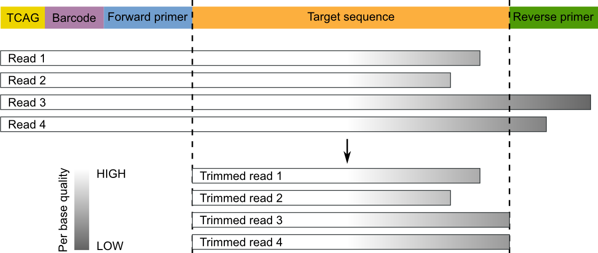

Single-end sequencing¶
This tutorial describes a standard micca pipeline for the analysis of single-end amplicon data. This pipeline is intended for different platforms, such as Roche 454, Illumina MiSeq/HiSeq and Ion Torrent. Although this tutorial explains how to apply the pipeline to 16S rRNA amplicons, it can be adapted to others markers gene/spacers, e.g. Internal Transcribed Spacer (ITS) or 28S.
Table of Contents
Dataset download¶
The dataset used in this tutorial is taken from the Barelli et al. paper Habitat fragmentation is associated to gut microbiota diversity of an endangered primate: implications for conservation (https://doi.org/doi:10.1038/srep14862). The dataset contains only a subset of the entire study (Mwanihana samples only) for a total of 15 samples (in FASTQ format) and 235179 16S rRNA amplicon reads (V1-V3 hypervariable regions, 27-Forward 5’-AGAGTTTGATCMTGGCTCAG, 533-Reverse 5’-TTACCGCGGCTGCTGGCAC). The 454 pyrosequencing was carried out on the GS FLX+ system using the XL+ chemistry.
Open a terminal, download the data and prepare the working directory:
wget ftp://ftp.fmach.it/metagenomics/micca/examples/mwanihana.tar.gz
tar -zxvf mwanihana.tar.gz
cd mwanihana
Merge files¶
Now the FASTQ files must be merged in a single file. This operation can be performed with the merge command. Sample names will be included into the sequence indentifiers.
micca merge -i fastq/*.fastq -o merged.fastq
Note
The merge command works with FASTQ or FASTA files. If your sequences are in a different format (e.g. SFF or FASTA+QUAL) use convert to convert them.
Warning
In the case of multiplexed reads (with 5’ barcode sequences) use split instead of merge. This command will perform demultiplexing and merging at the same time.
Warning
In the case of overlapping paired-end reads go to Paired-end sequencing.
Primer trimming¶
Segments which match PCR primers should be now removed. Typical Roche 454 reads start with a sequence key (e.g. TCAG) followed by the barcode (if it was not previously removed) and the forward primer. For these types of data (and in general, for single-end sequencing) we recommend to trim both forward reverse primers and discard reads that do not contain the forward primer. Moreover, sequence preceding (for the forward) or succeding (for the reverse, if found) primers should be removed:
These operations can be performed with the trim command:
micca trim -i merged.fastq -o trimmed.fastq -w AGAGTTTGATCMTGGCTCAG -r GTGCCAGCAGCCGCGGTAA -W
The option -W/--duforward ensures that reads that do not contain
the forward primer will be discarded.
Warning
Do not use the -R/--dureverse with single-end reads.
Quality filtering¶
Producing high-quality OTUs requires high-quality reads. The filter command filters sequences according to the maximum allowed expected error (EE) rate % (see Quality filtering strategy in micca). We recommend values <=1%. Moreover, to obtain good results in clustering (see otu), reads should be truncated at the same length when they cover partial amplicons or if quality deteriorates towards the end (common when you have long amplicons in single-end sequencing).
Warning
Parameters for the filter command should be chosen using the command filterstats.
Choosing parameters for filtering¶
The command filterstats reports the fraction of reads that would pass for each specified maximum expected error (EE) rate %:
micca filterstats -i trimmed.fastq -o filterstats
Open the PNG file filterstats/stats_plot.png:
In this case we are interested in the plot below (minimum length
filtering + truncation). A truncation length of 350 and a maximum
error rate of 0.5% seems to be a good compromise between read read
length, expected error rate and number of reads remaining. Inspecting
the file filterstats/trunclen_stats.txt, you can see that more
than 92% reads will pass the filter:
L 0.25 0.5 0.75 1.0 1.25 1.5
...
349 78.905 92.472 97.425 99.135 99.705 99.897
350 78.639 92.385 97.389 99.126 99.704 99.896
351 78.369 92.300 97.357 99.116 99.700 99.892
...
Note
To obtain general sequencing statistics, run stats.
Filter sequences¶
Now we can run the filter command with the selected parameters:
micca filter -i trimmed.fastq -o filtered.fasta -e 0.5 -m 350 -t
Note
The maximum number of allowed Ns after truncation can be also specified in filterstats and in filter.
OTU picking¶
To characterize the taxonomic structure of the samples, the sequences are now organized into Operational Taxonomic Units (OTUs) at varying levels of identity. An identity of 97% represent the common working definition of bacterial species. The otu command implements several state-of-the-art approaches for OTU clustering, but in this tutorial we will focus on the de novo greedy clustering (see OTU picking in micca):
micca otu -i filtered.fasta -o denovo_greedy_otus -d 0.97 -c -t 4
The otu command returns several files in the output
directory, including the OTU table (otutable.txt) and a FASTA
file containing the representative sequences (otus.fasta).
Note
See OTU picking in micca to see how to apply the swarm de novo, closed-reference and the open-reference OTU picking strategies to these data.
Assign taxonomy¶
Now we can assign taxonomy to each representative sequence using the classify command. In this tutorial we use the RDP (https://doi.org/10.1128/AEM.00062-07) classifier.
micca classify -m rdp -i denovo_greedy_otus/otus.fasta -o denovo_greedy_otus/taxa.txt
classify returns a taxonomy file like this:
DENOVO1 Bacteria;Firmicutes;Clostridia;Clostridiales
DENOVO2 Bacteria;Bacteroidetes;Bacteroidia;Bacteroidales
DENOVO3 Bacteria;Verrucomicrobia;Opitutae
DENOVO4 Bacteria;Bacteroidetes;Bacteroidia;Bacteroidales
...
Infer the phylogenetic tree¶
These steps are necessary if you want to use phylogenetic-based metrics such as the UniFrac distance (https://doi.org/10.1128/AEM.01996-06) in the downstream analysis.
Multiple Sequence Alignment (MSA)¶
The msa command provides two approaches for MSA: MUSCLE (https://doi.org/10.1093/nar/gkh340) (de novo alignment) and Nearest Alignment Space Termination (NAST) (https://doi.org/10.1093/nar/gkl244) (which uses a template alignment). In this tutorial we will use the NAST alignment method. For 16S rRNA sequences, a good template alignment is the Greengenes Core Set:
wget ftp://ftp.fmach.it/metagenomics/micca/dbs/core_set.tar.gz
tar -zxvf core_set.tar.gz
At this point we can run the msa command:
micca msa -m nast -i denovo_greedy_otus/otus.fasta -o denovo_greedy_otus/msa.fasta --nast-template core_set_aligned.fasta.imputed --nast-threads 4
Build the phylogenetic tree¶
At this point we can build the phylogenetic tree from the MSA using tree:
micca tree -i denovo_greedy_otus/msa.fasta -o denovo_greedy_otus/tree.tree
Note
The output tree is in Newick format.
Midpoint rooting¶
UniFrac metrics require phylogenetic trees to be rooted. The tree can be rooted (in this case at midpoint between the two most distant tips of the tree) using the root command:
micca root -i denovo_greedy_otus/tree.tree -o denovo_greedy_otus/tree_rooted.tree
Note
Tree can also be rooted with the outgroup clade containing selected targets, see root.
Build the BIOM file¶
The Biological Observation Matrix (BIOM) is a common format for representing OTU tables and metadata and is the core data type for downstream analyses in QIIME and in phyloseq. tobiom converts the OTU table and the taxonomy table produced by the previous steps to the BIOM format. In addition, the Sample data can be added:
micca tobiom -i denovo_greedy_otus/otutable.txt -o denovo_greedy_otus/tables.biom -t denovo_greedy_otus/taxa.txt -s sampledata.txt